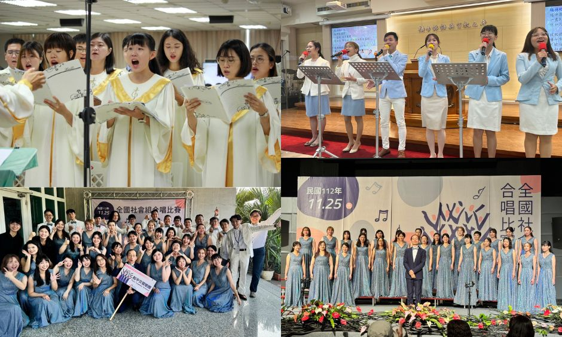
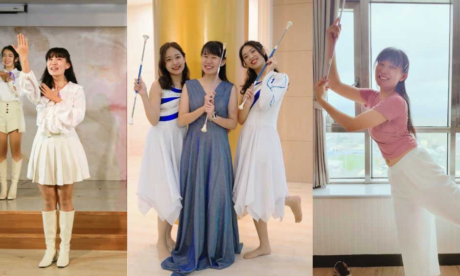

曾在黑暗中迷茫
小學因外貌不出眾、功課表現普通，而沒自信。感覺世界每分每秒正上演許多很棒的故事，那些耀眼的人就像主角，而我不論到哪都是配角。
直到高中到教會學習，才明白 神看人不像人看人，人是看外表，耶和華是看內心。與其因外表而自卑，不如投資時間栽培和造就自己的內心。在運動、設計、影音、舞蹈、合唱中，不斷嘗試和挑戰自我，終於找到身上的閃光點與自信。
運動不只是健康，更鍛鍊精神力！
音樂 觸動人心的聲音
「語言也有界線，用說無法言喻。」真正觸動人心的是聲音！
過去聽音樂，只是抒發心情，營造氣氛。其實，人類發出的聲音就是「樂器」！歌詞文字是內容，但人聲包含情感可傳達。
教會詩班服事，「反覆會造就深度，深度會造就永恆。」一邊學習歌唱、一邊造自己，更一邊體會信仰，成為唱出天國歌聲的使命者。

成為能見證呼喊的人
舞蹈 天國的舞者
榮耀神就是做神所期盼的事，首先要完全地認識神並仰望主，體會根本來生活，這就是歸榮耀給神。
藝術的根本，是創造天地萬物的耶和華 神！
不再只是為了人們的目光做藝術，而是站在 神榮耀的舞台，展現我的自信、美麗和愛給創造主 神，這才是活著的藝術！
